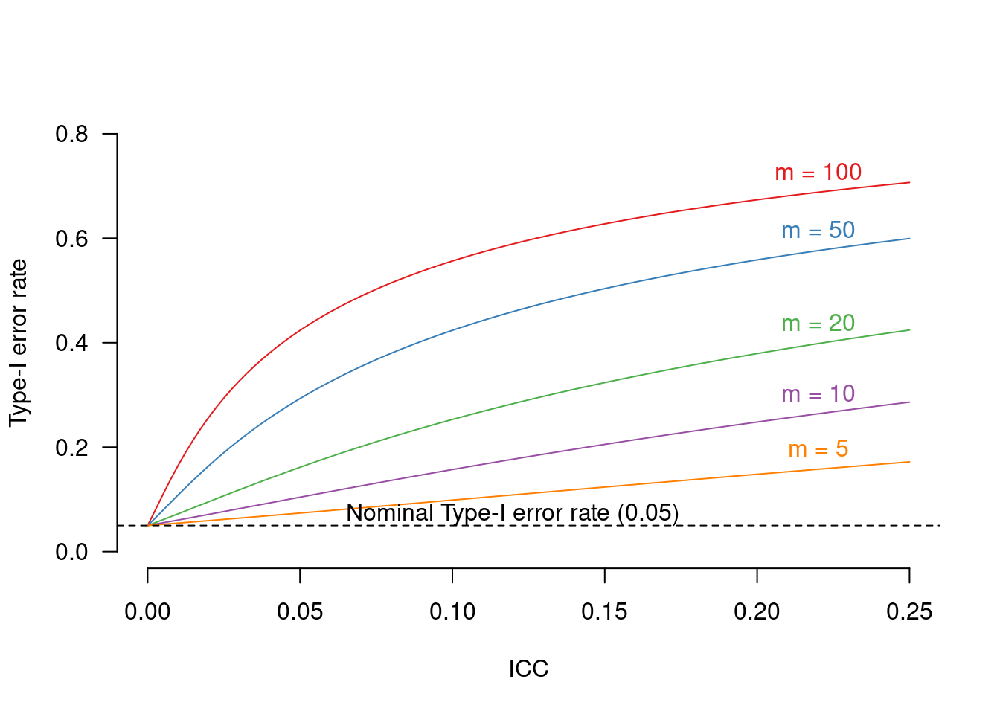
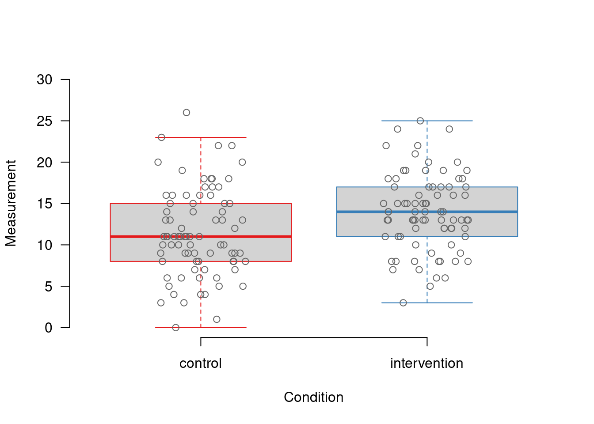
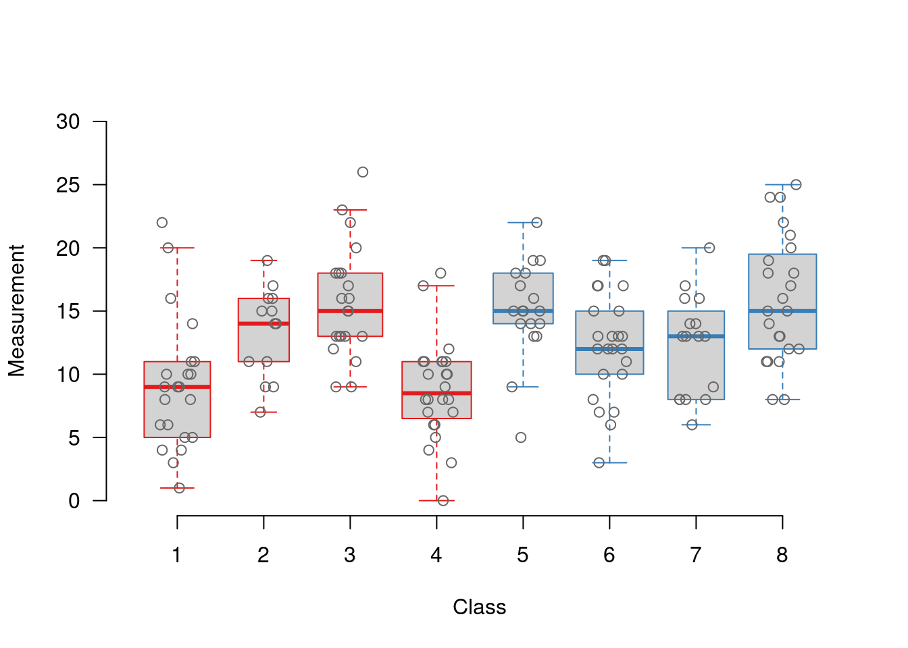

Analysing experiments with intact groups: the problem and an easy solution
significance
power
design features
cluster-randomised experiments
R
To evaluate a new teaching method, a researcher arranges for one class of 20 students to be taught with the old method and another class of 20 students with the new method. According to a t-test, the students taught with the new method significantly outperform the control group at an end-of-year evaluation. The set-up of studies like these is pretty standard in applied linguistics – but it is fatally flawed. In this post, I explain the problem with comparing intact groups using traditional statistical tools and present a solution that’s easy to both understand and implement.
The problem
In a textbook experiment, the 40 students from the example above would have been assigned to one of the teaching methods randomly and on an individual basis. In the example above, however, the assignment to one of the teaching methods wasn’t done individually but class-by-class, so that all students in the same class were taught using the same method.
The difference may seem minute – after all, we end up with about 20 participants in either group, so who cares? However, assigning participants to experimental conditions class-by-class – in what is called a cluster-randomised experiment – leads to a problem known as clustering: Due to selection processes, a common background, having the same teachers, etc., two students in the same class tend to be somewhat more alike than two students from different classes. This, in turn, means that the information that each participant contributes to the study isn’t entirely new: if someone’s class-mates have above-average reading skills, chances are she too will have above-average reading skills, regardless of the teaching method. Rather than having 40 participants, the researcher in the example above could have the equivalent of, say, 8, 14 or 32 participants per group in terms of the information that the sample contains.
The degree of clustering is expressed in the intra-class correlation (ICC). This number takes a value between 0 and 1. An ICC of 1 means that all values within a cluster (e.g. a class) are identical to each other so that multiple observations per cluster don’t contribute any information to the study. An ICC of 0 means that values within a cluster are no more alike that values from different clusters. For reference, typical ICC values fall in the 0.15 to 0.20 bracket in educational contexts.
Ordinary t-tests and ANOVAs as well as correlation and regression analyses don’t take into account the clustered nature of such data. Instead, they assume that each datapoint is independent of any other. This may seem like a technicality, but its effect is staggering. Conventionally, a statistical test has a 5% chance of detecting a ‘significant effect’ even if nothing is going on. This is known as the Type-I error rate. If clustered data are analysed without taking the clustering into account, the Type-I error rate could easily rise to 40% or more. Crucially, even seemingly negligible degrees of clustering bloat the Type-I error rate. Figure 1 shows how the actual Type-I error rate increases as the ICC becomes larger and as the number of participants per cluster increases if the clustered nature of the data is not taken into account.
Update (2023-08-25): There was a slight inaccuracy in the formula I initially used to draw this plot. I’ve now corrected this.
The intuition behind these bloated Type-I error rates is this. If you compare two groups of 10 participants each but you pretend to compare two groups of 100 participants each (e.g. by entering each participant’s outcome ten times), you overestimate the degree of confidence you have in your results. Similarly, if you have 40 participants that are the informational equivalent of only 20 participants, you overestimate your confidence in the results.
Clustered data are fairly common in applied linguistics and the language sciences at large, and often for good reason. For instance, it may not be feasible to randomly assign students to teaching methods on an individual basis, or doing so may jeopardise the ecological validity of the study. But regardless of whether a cluster-randomised experiment is well-motivated, the clustering it gives rise to needs to be taken into account in order to arrive at statistically valid results. Before discussing how this can be done, here are some examples of common clustered designs so that you may more easily identify clustered data when you stumbled across them:
94 students from 6 classes participate in an intervention study. To improve the study’s ecological validity, students in the same class are all assigned to the same experimental condition. If you see a t-test with 92 (i.e. 94 - 2) degrees of freedom (e.g. ‘t(92) = 2.3, p = 0.02’), the analysis is overwhelming likely not to have taken into account clustering and probably underestimates the Type-I error rate. In a word, the analysis is invalid.
The length of the KIT vowel ([I]) is measured in 15 bilinguals and 13 monolinguals. A total of 840 tokens are collected. In the Results section, you find the following: “We found a significant length difference between [I] sounds produced by bilinguals (n = 450, M = 72 ms, SD = 29 ms) and those produced by the monolingual controls (n = 390, M = 87 ms, SD = 28 ms; t(838) = 7.38, p < 0.001).” This study doesn’t concern comparisons of intact groups of students. Nevertheless, vowel tokens produced by one speaker tend to be more alike than vowels produced by different speakers. In other words, vowel tokens cluster by speaker in the same way that students cluster by class. A traditional t-test on the individual vowels (i.e. a t-test with 840 - 2 = 838 degrees of freedom) ignores this clustering and is therefore invalid.
40 participants are randomly assigned to one of two teaching methods on an individual basis. Teaching takes place in four groups of ten participants each (two groups per method). Even though the participants are assigned to the teaching methods individually, some clustering can be expected to arise during teaching (see Lee and Thompson 2005 for a related discussion). A traditional t-test (in this case one with 40 - 2 = 38 degrees of freedom) ignores this clustering, too, and is likely to yield too low a p-value.
80 primary-school students are divided into age groups and, within age group, are randomly combined into pairs. They are then given a map task, and the lexical diversity of their utterances is measured. A regression or correlation analysis is used to gauge the relationship between the students’ age and their lexical diversity. Here, too, the data are clustered – presumably by class but also per dyad: Mutual likes and dislikes and phenomena such as lexical and syntactic priming may contribute to lexical diversity measurements within each dyad being more similar than between different dyads in the same age group.
A questionnaire-based experiment is administered to two groups of students taking parallel courses. Students in the first group all fill out version A of the questionnaire; those in the second group fill out version B. Again, even fairly innocuous-looking similarities within each group (friends going to the same course, students having the same timetable because they take the same courses and have similar interests, more convenient to attend one class and not the other due to better train connections etc.) can lead to an overstated degree of confidence in the study’s results.
In the last three cases, researchers may argue that no clustering is present in their data, but this argument would be extremely difficult to prove statistically. (It would involve showing that the between-cluster variance is zero.) Such an argument would be entirely rhetorical and would probably be quite easy to pick apart.
An easy solution
The fancy solution for dealing with the clustering problem is to analyse the data in a multilevel (i.e. mixed-effects) model. Multilevel models aren’t too easy to learn, though, and communicating their results to an audience that’s unfamiliar with them can be a challenge. There’s a conceptually straightforward and easy-to-implement alternative, however: average the measurements per cluster and run the t-test on the cluster averages instead. Doing so removes the dependencies in the data and produces nominal Type-I error rates.
To show how easy this is and how fundamentally it can affect the results, I’ll go through the process using simulated data for a cluster-randomised experiment that you can either download or read directly into R.
dat <- read.csv("http://homeweb.unifr.ch/VanhoveJ/Pub/Data/clusteredData.csv"
, stringsAsFactors = TRUE)
str(dat)'data.frame': 160 obs. of 3 variables:
$ Class : int 1 1 1 1 1 1 1 1 1 1 ...
$ Condition : Factor w/ 2 levels "control","intervention": 1 1 1 1 1 1 1 1 1 1 ...
$ Measurement: int 8 8 5 9 3 4 10 16 14 20 ...summary(dat) Class Condition Measurement
Min. :1.000 control :80 Min. : 0.00
1st Qu.:3.000 intervention:80 1st Qu.: 9.00
Median :4.500 Median :13.00
Mean :4.569 Mean :12.69
3rd Qu.:6.000 3rd Qu.:16.00
Max. :8.000 Max. :26.00 As you can see, this is a simple experiment with 80 participants per condition. Cross-tabulating the Condition and Class variables reveals that all students in a given class were assigned to the same experimental condition.
xtabs(~ Class + Condition, dat) Condition
Class control intervention
1 22 0
2 13 0
3 21 0
4 24 0
5 0 18
6 0 23
7 0 16
8 0 23What if we were to ignore this clustering? A visual inspection of the distribution of the scores in each condition wouldn’t reveal anything out of the ordinary…
# Some graphical settings
par(las = 1, bty = "n")
# Draw boxplot, but don't draw outliers
boxplot(Measurement ~ Condition, data = dat,
# red = control; blue = intervention
border = c("#E41A1C", "#377EB8"),
xlab = "Condition",
ylab = "Measurement", ylim = c(0, 30),
outline = FALSE)
# Add individual points
points(Measurement ~ jitter(as.numeric(Condition)),
col = "grey40",
data = dat)
… and a t-test would reveal a highly significant difference between the two conditions (t(158) = 3.2, p = 0.002): the intervention worked!
t.test(Measurement ~ Condition, data = dat,
var.equal = TRUE)
Two Sample t-test
data: Measurement by Condition
t = -3.1913, df = 158, p-value = 0.001709
alternative hypothesis: true difference in means between group control and group intervention is not equal to 0
95 percent confidence interval:
-4.0472258 -0.9527742
sample estimates:
mean in group control mean in group intervention
11.4375 13.9375 It’s only by plotting the scores per class that we get an idea of how the data are clustered. Class 3, a control class, consists of students who were pretty good at the task relative to the other control classes, for instance. (Incidentally, I set the ICC value to 0.1 when simulating this dataset.)
par(las = 1, bty = "n")
# Draw boxplots per class, no outliers
boxplot(Measurement ~ Class, data = dat,
# colour boxes red (control) or blue (intervention)
border = c(rep("#E41A1C", 4), rep("#377EB8", 4)),
varwidth = TRUE, # wider boxes for larger classes
xlab = "Class",
ylab = "Measurement", ylim = c(0, 30),
outline = FALSE)
# Add individual points
points(Measurement ~ jitter(as.numeric(Class)),
col = "grey40",
data = dat)
To take by-class clustering into account, we can compute the mean score per class.
Update (2023-08-25): Computing such summaries is now much easier than in 2015; I’ve adapted the code accordingly.
library(tidyverse)── Attaching core tidyverse packages ──────────────────────── tidyverse 2.0.0 ──
✔ dplyr 1.1.2 ✔ readr 2.1.4
✔ forcats 1.0.0 ✔ stringr 1.5.0
✔ ggplot2 3.4.2 ✔ tibble 3.2.1
✔ lubridate 1.9.2 ✔ tidyr 1.3.0
✔ purrr 1.0.1
── Conflicts ────────────────────────────────────────── tidyverse_conflicts() ──
✖ dplyr::filter() masks stats::filter()
✖ dplyr::lag() masks stats::lag()
ℹ Use the conflicted package (<http://conflicted.r-lib.org/>) to force all conflicts to become errorsdat.byclass <- dat |>
group_by(Class, Condition) |>
summarise(
meanMeasurement = mean(Measurement),
nrStudents = length(Measurement)
, .groups = "drop"
)
dat.byclass# A tibble: 8 × 4
Class Condition meanMeasurement nrStudents
<int> <fct> <dbl> <int>
1 1 control 9.14 22
2 2 control 13.3 13
3 3 control 15.7 21
4 4 control 8.79 24
5 5 intervention 15.1 18
6 6 intervention 12.2 23
7 7 intervention 12.2 16
8 8 intervention 16.0 23These class means are then compared in a t-test:
t.test(meanMeasurement ~ Condition,
data = dat.byclass, var.equal = TRUE)
Two Sample t-test
data: meanMeasurement by Condition
t = -1.1031, df = 6, p-value = 0.3122
alternative hypothesis: true difference in means between group control and group intervention is not equal to 0
95 percent confidence interval:
-6.862295 2.597565
sample estimates:
mean in group control mean in group intervention
11.73750 13.86987 This time, the test fails to show a significant difference (t(6) = 1.1, p = 0.31), and we’d be forced to conclude that we have no evidence that the intervention worked. (Which doesn’t mean that it didn’t, mind you.)
Further reading and some additional points
For further references and some additional points concerning cluster-randomised experiments, I refer to a recent article of mine (Section 4). Here’s the bullet-point version of what I think researchers should be aware of when planning or evaluating class-based experiments:
Properly analysed cluster-randomised experiments have lower statistical power (i.e., a lower probability of observing statistical differences if the intervention actually works) than individually randomised experiments with the same number of participants – no matter what. Having 200 participants in an individually randomised design or 200 participants in a cluster-randomised design are two entirely different things.
Increasing the number of participants per cluster increases power, but not as much as you’d think. For instance, if having 10 classes of 20 participants gives you 40% power, having 10 classes of 200 participants gives you about 53% power. Increasing the number of clusters is much more efficient. With 14 classes of 20 participants each, you’d already have 57% power.
Having 10 clusters of 20 participants each is better than having 2 clusters of 80 participants each and 8 clusters of 5 participants each. If the former gives you 40% power, the latter gives you 27% power.
Think about what sort of covariates would account for uninteresting variance in the dependent variable. Pretest scores, for instance, can be averaged by class, too, and be entered into an analysis of covariance on the class means. Don’t go overboard with this, though: Each covariate costs a degree of freedom, and sacrificing a degree of freedom for a weakly predictive covariate could actually result in a loss of power.
Don’t run experiments with only one cluster per condition. A t-test on two cluster means will have 2 - 2 = 0 degrees of freedom and will return an error. Conceptually, a study with one cluster per condition has no reliable way of telling whether any difference between the two classes are due to the experimental condition or to the classes tested.
Lastly, in the article referenced above, I suggested that researchers may want to consider weighting the cluster means by the number of observations in each cluster when running analyses on the cluster means. This was incorrect. When running some simulations in preparation of this blog post, I noticed that weighting cluster means in this way inflates the test’s Type-I error rate, sometimes dramatically. My error was due to having misinterpreted some articles on taking unequal cluster sizes into account when planning cluster-randomised designs.
Software versions
devtools::session_info()─ Session info ───────────────────────────────────────────────────────────────
setting value
version R version 4.3.1 (2023-06-16)
os Ubuntu 22.04.3 LTS
system x86_64, linux-gnu
ui X11
language en_US
collate en_US.UTF-8
ctype en_US.UTF-8
tz Europe/Zurich
date 2023-08-25
pandoc 3.1.1 @ /usr/lib/rstudio/resources/app/bin/quarto/bin/tools/ (via rmarkdown)
─ Packages ───────────────────────────────────────────────────────────────────
package * version date (UTC) lib source
cachem 1.0.6 2021-08-19 [2] CRAN (R 4.2.0)
callr 3.7.3 2022-11-02 [1] CRAN (R 4.3.1)
cli 3.6.1 2023-03-23 [1] CRAN (R 4.3.0)
colorspace 2.1-0 2023-01-23 [1] CRAN (R 4.3.0)
crayon 1.5.2 2022-09-29 [1] CRAN (R 4.3.1)
devtools 2.4.5 2022-10-11 [1] CRAN (R 4.3.1)
digest 0.6.29 2021-12-01 [2] CRAN (R 4.2.0)
dplyr * 1.1.2 2023-04-20 [1] CRAN (R 4.3.0)
ellipsis 0.3.2 2021-04-29 [2] CRAN (R 4.2.0)
evaluate 0.15 2022-02-18 [2] CRAN (R 4.2.0)
fansi 1.0.4 2023-01-22 [1] CRAN (R 4.3.1)
fastmap 1.1.0 2021-01-25 [2] CRAN (R 4.2.0)
forcats * 1.0.0 2023-01-29 [1] CRAN (R 4.3.0)
fs 1.5.2 2021-12-08 [2] CRAN (R 4.2.0)
generics 0.1.3 2022-07-05 [1] CRAN (R 4.3.0)
ggplot2 * 3.4.2 2023-04-03 [1] CRAN (R 4.3.0)
glue 1.6.2 2022-02-24 [2] CRAN (R 4.2.0)
gtable 0.3.3 2023-03-21 [1] CRAN (R 4.3.0)
hms 1.1.3 2023-03-21 [1] CRAN (R 4.3.0)
htmltools 0.5.5 2023-03-23 [1] CRAN (R 4.3.0)
htmlwidgets 1.6.2 2023-03-17 [1] CRAN (R 4.3.1)
httpuv 1.6.11 2023-05-11 [1] CRAN (R 4.3.1)
jsonlite 1.8.7 2023-06-29 [1] CRAN (R 4.3.1)
knitr 1.39 2022-04-26 [2] CRAN (R 4.2.0)
later 1.3.1 2023-05-02 [1] CRAN (R 4.3.1)
lifecycle 1.0.3 2022-10-07 [1] CRAN (R 4.3.0)
lubridate * 1.9.2 2023-02-10 [1] CRAN (R 4.3.0)
magrittr 2.0.3 2022-03-30 [1] CRAN (R 4.3.0)
memoise 2.0.1 2021-11-26 [2] CRAN (R 4.2.0)
mime 0.10 2021-02-13 [2] CRAN (R 4.0.2)
miniUI 0.1.1.1 2018-05-18 [1] CRAN (R 4.3.1)
munsell 0.5.0 2018-06-12 [1] CRAN (R 4.3.0)
pillar 1.9.0 2023-03-22 [1] CRAN (R 4.3.0)
pkgbuild 1.4.2 2023-06-26 [1] CRAN (R 4.3.1)
pkgconfig 2.0.3 2019-09-22 [2] CRAN (R 4.2.0)
pkgload 1.3.2.1 2023-07-08 [1] CRAN (R 4.3.1)
prettyunits 1.1.1 2020-01-24 [2] CRAN (R 4.2.0)
processx 3.8.2 2023-06-30 [1] CRAN (R 4.3.1)
profvis 0.3.8 2023-05-02 [1] CRAN (R 4.3.1)
promises 1.2.0.1 2021-02-11 [1] CRAN (R 4.3.1)
ps 1.7.5 2023-04-18 [1] CRAN (R 4.3.1)
purrr * 1.0.1 2023-01-10 [1] CRAN (R 4.3.0)
R6 2.5.1 2021-08-19 [2] CRAN (R 4.2.0)
RColorBrewer 1.1-3 2022-04-03 [1] CRAN (R 4.3.0)
Rcpp 1.0.11 2023-07-06 [1] CRAN (R 4.3.1)
readr * 2.1.4 2023-02-10 [1] CRAN (R 4.3.0)
remotes 2.4.2 2021-11-30 [2] CRAN (R 4.2.0)
rlang 1.1.1 2023-04-28 [1] CRAN (R 4.3.0)
rmarkdown 2.21 2023-03-26 [1] CRAN (R 4.3.0)
rstudioapi 0.14 2022-08-22 [1] CRAN (R 4.3.0)
scales 1.2.1 2022-08-20 [1] CRAN (R 4.3.0)
sessioninfo 1.2.2 2021-12-06 [2] CRAN (R 4.2.0)
shiny 1.7.4.1 2023-07-06 [1] CRAN (R 4.3.1)
stringi 1.7.12 2023-01-11 [1] CRAN (R 4.3.1)
stringr * 1.5.0 2022-12-02 [1] CRAN (R 4.3.0)
tibble * 3.2.1 2023-03-20 [1] CRAN (R 4.3.0)
tidyr * 1.3.0 2023-01-24 [1] CRAN (R 4.3.0)
tidyselect 1.2.0 2022-10-10 [1] CRAN (R 4.3.0)
tidyverse * 2.0.0 2023-02-22 [1] CRAN (R 4.3.1)
timechange 0.2.0 2023-01-11 [1] CRAN (R 4.3.0)
tzdb 0.4.0 2023-05-12 [1] CRAN (R 4.3.0)
urlchecker 1.0.1 2021-11-30 [1] CRAN (R 4.3.1)
usethis 2.2.2 2023-07-06 [1] CRAN (R 4.3.1)
utf8 1.2.3 2023-01-31 [1] CRAN (R 4.3.1)
vctrs 0.6.3 2023-06-14 [1] CRAN (R 4.3.0)
withr 2.5.0 2022-03-03 [2] CRAN (R 4.2.0)
xfun 0.39 2023-04-20 [1] CRAN (R 4.3.0)
xtable 1.8-4 2019-04-21 [1] CRAN (R 4.3.1)
yaml 2.3.5 2022-02-21 [2] CRAN (R 4.2.0)
[1] /home/jan/R/x86_64-pc-linux-gnu-library/4.3
[2] /usr/local/lib/R/site-library
[3] /usr/lib/R/site-library
[4] /usr/lib/R/library
──────────────────────────────────────────────────────────────────────────────